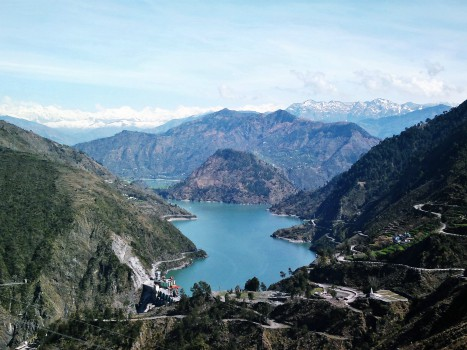
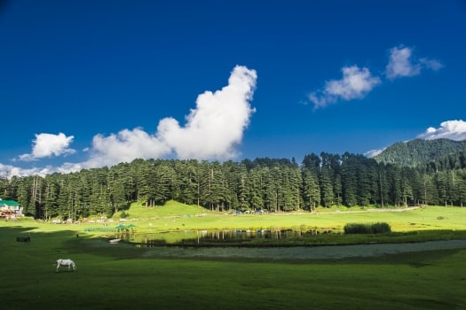
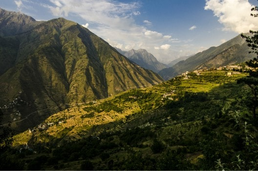
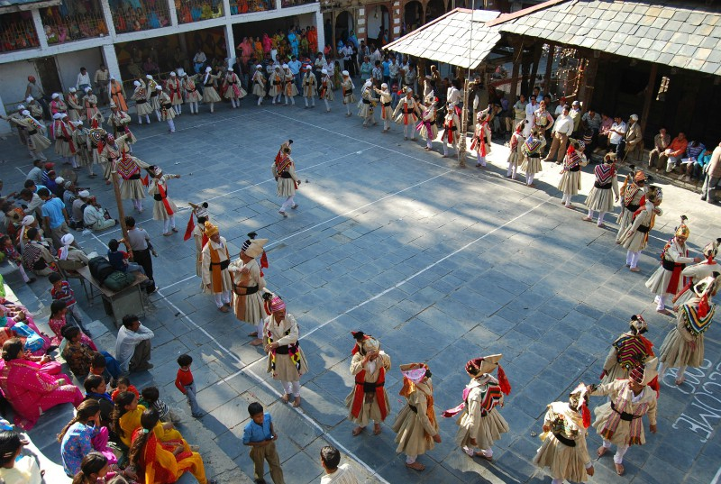

‘Shimla nahin basna, Kasauli nahin basna, Chamba jana zaroor’ – Settle not in Shimla, not is Kasauli, Chamba is a must go to place – are the opening lines of a Himachali folk song. Such is the charm of the place. Dotted with historical and architecturally significant landmarks, the town in its temples and palaces preserves much of its rich medieval past. For a traveller there is much to explore in and around Chamba.
Chamba, perhaps the loveliest valley of Himachal, is a treasure trove of scenic attractions, sparkling streams, primeval lakes, meadows, dense alpine tree covers, rich wildlife and fertile valleys. At the crossroads of Dhauladhar and Zanskar ranges, the region borders Jammu & Kashmir and is the northernmost district of the state. Fast flowing streams drain into River Ravi on the southern side and into River Chenab on the northern fringes.
The land is populated with a lively people who are endowed with a vibrant culture that stretches back thousands of years. Charm of the natives heartwarming hospitality is such that it has you longing for more. A splendid artistic heritage includes fine temple architecture, beautiful miniature paintings and the exquisite embroidered Chamba Rumal.
Nestling on the right bank of River Ravi, on terraced flats at a scenic place where the smaller Sal River meets the large one, the sprawling township of Chamba was founded by Raja Sahil Varman in 920 AD. It was at the insistence of his daughter Champavati that the king shifted his capital from Bharmaur to Chamba. After Chamba merged with the Indian union in 1947, the town now is a district headquarter.
Languages Spoken: Hindi and Englishare spoken by people engaged in tourism and professional trades.The locals mainly use Chambyali, a dialect.
Clothing Essentials:Summer temperature in Chamba can rise to around 35 degree Celsius and in winter they do hover near Zero degree Celsius. Light cotton clothes are best suited for summers, light woollens for spring and autumn but for winters, heavy woollen clothing is necessary. Those travelling into higher lands would require heavy woollens as morning-evening temperature can get very cold.
|  | Chamera Lake On the route from Chamba to Dalhousie, the lake of Chamera Dam backwaters have developed into a popular getaway. Water sport activities of boating, kayaking, canoeing, sailing and fishing are recreational and fun filled escapades. To end a day, one can sit back and enjoy the splendour of the sunset as the calm waters reflect back vivid colours. The dam built on River Ravi is 40 km from Chamba. |
|
Khajjiar:
Often compared with Swiss mountain meadows, Khajjiar is a wide grassy clearing around a pond with a thick cedar forest. On higher ground near the pond is the small temple of Khajji Nag that dates to the 12th century AD. This scenic spot is 26 km from Chamba and 23 km from Dalhousie. More than a road journey, an easy trek to Khajjiar from Chamba brings you up close with nature to make it a memorable photogenic experience. |
 |
|  | Bharmaur Having been the seat of power for four centuries, Bharmaur was known for its grandiose and royal benevolence. Remains and monuments, best exemplified in the Chaurasi temple complex, exhibit the heritage of the historical township. Nestled on the bank of Budhal river, in a fertile valley between the Dhauladhar and Pir Panjal ranges with an abundant of easily accessible alpine pastures in the vicinity, the land is home to the noble nomadic Gaddi tribesman. |
|
Shakti Devi Temple at Chhatrari:
Shakti Devi temple at Chhatrari, is a well documented temple of Chamba – Bharmaur built in the traditional architectural style. The temple belongs to the period when the first temples of Chaurasi complex at Bharmaur were built. The wood work at this temple is very impressive. The brass idol of Shakti Devi is dated to the 8th century period. On the 3rd day of Manimahesh Yatra, water from Manimahesh lake is brought down to the temple and the idol of Maa Shakti is bathed with it. Chhatrari is 40 Km from Chamba. |
 |
Salooni
Spread out along a ridge between Pir Panjal and Dhauladhar ranges, Salooni, overlooking the Bhandal valley is where Bollywood directors come to shoot romantic sequences. The nearby Gamgul Siahehi Wildlife Sanctuary conserves rich Himalayan flora and fauna which includes musk deer, barking deer, monal pheasant and the snow leopard. Salooni is 56 kms from Chamba and the game reserve is 20 km from Salooni.
Bhandal
The Bhandal valley opens up at Salooni and after passing through Langhera goes on to Kishtwar in Jammu. The valley is rich in flora and fauna and is a popular trekking area. The 38 km journey from Chamba to Bhandal passes through some stunning landscape in Ravi River valley.